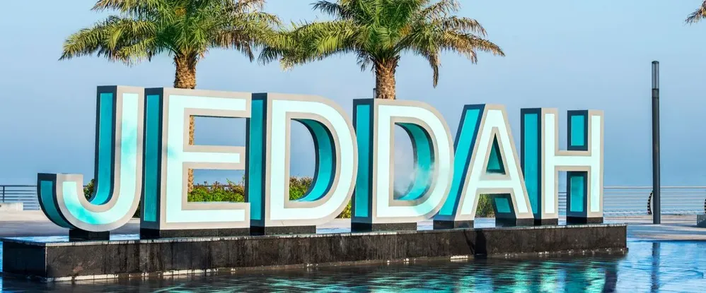

Explore the beauty and culture of Jeddah, Saudi Arabia.
Discover Jeddah's most visited and iconic tourist destinations, showcasing a blend of modern marvels and historical treasures.
Jeddah City Walk, in the heart of Jeddah, Saudi Arabia, is a vibrant promenade along the Red Sea coast. It features the iconic King Fahd Fountain, stunning seafront views, and a diverse range of shops, cafes, restaurants, and boutiques. This bustling destination offers shopping, dining, and entertainment, often hosting cultural events and art exhibitions, blending modernity with Arabian charm.
Jeddah Corniche in Saudi Arabia is a stunning waterfront promenade along the Red Sea coast. It offers breathtaking views, a serene park with lush greenery, and outdoor activities. The iconic King Fahd Fountain adds grandeur to the skyline. With dining options, cafes, and recreational facilities, it's a perfect spot for families, couples, and friends to enjoy quality time in a tranquil coastal setting.
Embark on a journey through time and experience the rich heritage of Jeddah by exploring its historical marvels.
Jeddah Al-Balad, the historic heart of Jeddah, Saudi Arabia, is a captivating journey through time. This ancient district, with its centuries-old architecture and labyrinthine alleys, stands as a living testament to the city's rich heritage. The coral stone buildings adorned with intricate wooden balconies and latticework tell the story of a bustling trading port that has witnessed the ebb and flow of commerce and cultures for centuries. Al-Balad's historical significance is further underscored by its UNESCO World Heritage status, recognizing its unique architectural and cultural value. Visiting Jeddah Al-Balad is a journey that transports you to a bygone era, where history, architecture, and culture converge to create an immersive and unforgettable experience.
"Abruq Ar Rugamah," also known as "Abruq Island," is a remote natural gem situated in the Farasan Islands off the southwestern coast of Saudi Arabia. This picturesque island features pristine white sandy beaches, crystal-clear turquoise waters, and vibrant coral reefs, making it a paradise for snorkeling and diving enthusiasts. Beyond its marine wonders, Abruq Ar Rugamah offers a serene escape, serving as a habitat for migratory and resident birds, and providing a tranquil retreat for nature lovers seeking solace amidst its unspoiled beauty. With its pristine charm and secluded allure, Abruq Ar Rugamah beckons to those in search of an untouched paradise.